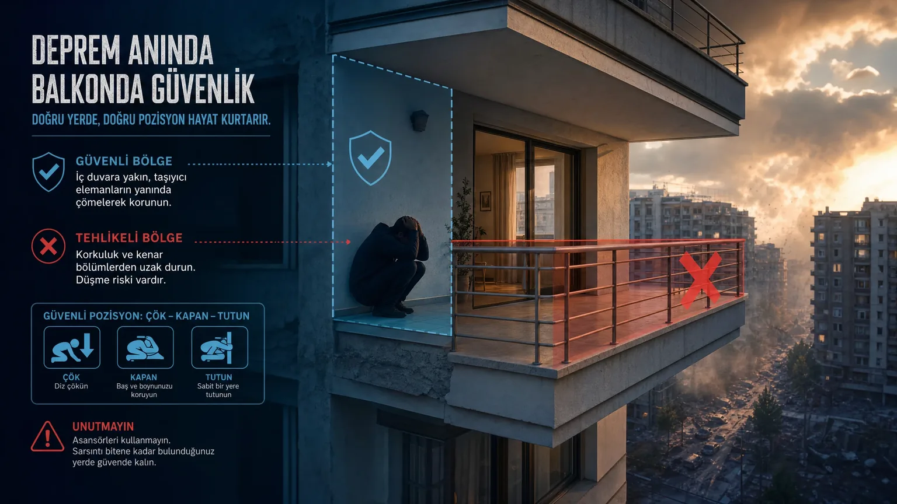

Deprem Anında Balkon Güvenli Mi? — Bilimsel Cevap
Deprem başlayınca refleks olarak çoğu kişi balkona koşar. Bu, hayatınızı kaybetmenize yol açabilecek tehlikeli bir karardır. Türkiye'de balkonların büyük çoğunluğu 'konsol' yapıdadır ve depremde ilk düşen yerlerdir. Bilimsel olarak güvenlikleri ne durumda?
Neden Balkon Depremde Tehlikeli Olabilir?
Balkonların büyük çoğunluğu konsol kiriş sistemiyle taşınır — yani sadece bir uçtan bağlıdır, diğer ucu havadadır. Depremde bu yapıların salınımı tek yönlüdür ve yıkıcıdır. Üstelik balkon korkulukları bina tasarımında 'yapısal olmayan eleman' kategorisinde değerlendirilir; deprem yüklerine göre boyutlandırılmazlar.
Konsol balkonlarda yığın etkisi (titreşim büyütme) yaşanır. Bina kendisi 1g ivmeye maruzsa, balkon ucu 1.5-2g ivme yaşayabilir. Bu, balkonun sallanma genliğinin binadan büyük olması demektir.
Balkon Yapısal Olarak Nasıl Davranır?
Konsol balkonlarda 4 yıkıcı senaryo: (1) Konsol kiriş kırılması: Beton dayanımı yetersiz, balkon aşağı düşer. (2) Donatı kayması: İnşaatçı yetersiz pas payı bıraktıysa donatılar açılır. (3) Korkuluk yıkılması: Korkuluk demir kalitesi düşükse insan üzerine düşer. (4) Beton şişmesi: Yaşlı binalarda nem ve donma-çözünme döngüsüyle beton parçalanır.
Karşıdaki binayı izleyerek balkonun salınımını görebilirsiniz: balkonun amplitude'u (genliği) bina gövdesinden büyüktür. 6.0+ büyüklükteki depremde konsol balkon kopma riski %40-60'tır.
Deprem Anında Balkondaysanız Ne Yapmalısınız?
Eğer deprem başladığında zaten balkondaysanız ve içeri girmek için 3-5 saniye varsa: Hemen içeri girin, yere çökün, başınızı koruyun.
Süre yoksa: Balkonun bina duvarına en yakın köşesine çökün. Bu, balkon kopma anında en az hareket eden noktadır. Korkuluğa kesinlikle yaslanmayın — düşen ilk şey korkuluk olur.
Sallanma sırasında balkondan başka bir alana geçmeye çalışmayın. Sarsıntı bittiğinde 60 saniye bekleyin, sonra tahliye prosedürünü uygulayın.
Balkona Kaçmak Doğru mu? Yaygın Yanılgı
HAYIR. 'Açık alan, daha güvenli' düşüncesiyle balkona kaçmak yanlıştır. Balkon açık alan değildir — yapısal olarak en zayıf noktadır.
Doğru güvenli yerler ev içinde: (1) Sağlam masaların altı (Çök-Kapan-Tutun). (2) Taşıyıcı duvarın yanı (sırtınız perde duvarda). (3) Kapı kasası (yapısal olarak güçlü çerçeve, ama içeride duvar olmalı). (4) Yatak veya kanepenin yanı.
Asla yapmayın: balkona koşmak, asansör kullanmak, merdivenden inmek, koşarak dışarı çıkmaya çalışmak.
Eski Binalarda Balkon Riski: Çıkma ve Konsol Yapılar
1975 öncesi binalarda 'çıkma' (cumba) yapı sıkça görülür — balkon binadan dışarıya 1-1.5 m taşar. Bu yapılar:
(1) O dönemin yönetmeliğinde sismik yük gözetilmediği için minimum donatıya sahiptir.
(2) Yıllar içinde donatılarda paslanma birikmiş olabilir.
(3) Çıkma yapıyı bina ağırlığını taşıyan kolonlar değil, yan duvarlar destekler — depremde duvar yıkımı çıkmayı düşürür.
Eski binalardaki balkonların güvensizliği çok yüksek. Mümkünse performans raporu aldırın.
Balkon Camı ve Korkuluk Tehlikeleri
Balkon camlarının %80'i deprem sırasında patlar. Özellikle PVC çerçeveli camların tutturma noktaları zayıftır. Cam parçaları balkondaki kişinin üzerine düşer; ciddi yaralanmalar olur.
Korkuluklar: 1985 öncesi binalarda demir korkulukların betona kötü tutturulduğu görülür. Sallanma sırasında çıkar, insan üzerine düşer. Modern binalarda korkuluk rüzgar yüküne göre tasarlanır, deprem yüküne değil — bu hala güvensizdir.
Depremde Güvenli Alanlar: Balkon ile Karşılaştırma
Bina içinde güvenlik sıralaması (en güvenli → en az güvenli):
1. Sağlam masa altı (Çök-Kapan-Tutun pozisyonu): %85 güvenlik.
2. Yatak veya koltuğun yanı: %75 güvenlik.
3. İç duvarın yanı: %70 güvenlik.
4. Kapı kasası: %65 güvenlik (modern binalarda).
5. Banyo veya tuvalet (boruları ve duvar yoğunluğu): %60 güvenlik.
6. Orta salon, açık alan: %40 güvenlik (mobilyalar yıkılabilir).
7. Balkon (konsol): %25 güvenlik.
8. Asansör, merdiven: %10 güvenlik.
Deprem Sonrası Balkon Hasar Kontrolü Nasıl Yapılır?
Deprem sonrası ilk 24 saat içinde balkon hasar kontrolü yapın: (1) Bina cephesinden balkona bakın — eğim, çatlak, kopma var mı? (2) Korkulukların betona bağlantısını kontrol edin. (3) Balkon zemininde yeni çatlaklar var mı?
Şüphe halinde balkonu kullanmayın. Belediye yapı denetim ekibinin kontrol etmesini bekleyin. Çoğu il deprem sonrası ücretsiz yerinde inceleme hizmeti sunar.
Sıkça Sorulan Sorular
Balkon korkuluğu deprem dayanım sınıflı mı?
TBDY 2019'a göre balkon korkulukları 'yapısal olmayan eleman' sınıfındadır ve sismik yüklere göre tasarlanmaz. Sadece statik (rüzgar, insan ağırlığı) yüklere göre boyutlandırılır.
Yer kat balkonu da tehlikeli mi?
Yer kat balkonları diğer katlardan daha güvenlidir çünkü düşmenin etkisi daha azdır. Ancak yine de balkon yıkılabilir; içeride güvenli pozisyon tercih edilir.
Balkonum kapatılmış (cam balkon), depremde içerideyim, güvenli mi?
Cam balkonlar ek yüktür ve binanın deprem davranışını olumsuz etkiler. Deprem anında patlayabilirler. Camların TZB (temperli) olması parçaların yaralayıcı olmamasını sağlar ama hala risk vardır.
Yangın sırasında balkona kaçmak doğru mu?
Evet, yangın için balkona kaçma kuralı geçerlidir. Ancak deprem ve yangın aynı anda olduysa: önce deprem geçer, sonra yangın için tahliye yapılır. Sarsıntı sırasında balkona koşmak deprem ölümünü artırır.
Balkonu içeri katmak güvenli mi?
Konsol balkonu kapatıp odanın içine almak yapısal olarak değişiklik yapar; mutlaka mühendis onayı gerekir. Aksi halde bina sismik dengesi bozulabilir.